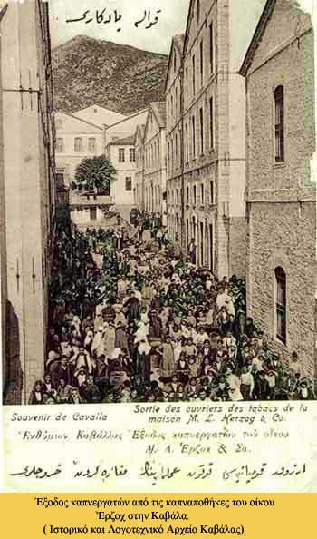

|

Η πρώτη συλλογική σύμβαση μεταξύ καπνεργατών, καπνεμπόρων και καπνοβιομηχάνων υπογράφεται στην Καβάλα το 1914. Οι απαιτήσεις της διεθνούς αγοράς, με τον εξωτερικό ανταγωνισμό να πιέζει τις εγχώριες επιχειρήσεις, έχουν άμεσες συνέπειες στα καπνεργατικά ζητήματα. Η εγκατάσταση 27.500 προσφύγων, μετά τη Μικρασιατική καταστροφή, προκάλεσε υπερπροσφορά εργατικού δυναμικού. Αποτέλεσμα όλων αυτών ήταν η ανεργία, που αυξήθηκε με την εισαγωγή των μηχανών. Οι έντονες εργατικές διαμαρτυρίες και διεκδικήσεις, που ακολούθησαν, συνάντησαν την κρατική καταστολή και συχνά τον περιορισμό των δικαιωμάτων των εργατών. Το 1925, σε μια προσπάθεια διατήρησης των κοινωνικών ισορροπιών, ψηφίζεται το νομοθετικό διάταγμα «Περί επεξεργασίας καπνού και ασφαλίσεως καπνεργατών» (κυβέρνηση Πάγκαλου) και ένα χρόνο μετά θεσπίζεται το «Ταμείο Ασφαλίσεως Καπνεργατών (ΤΑΚ)», με έδρα τη Θεσσαλονίκη. Τον ίδιο χρόνο ιδρύεται στην Καβάλα το «Κρατικό Γραφείο προστασίας καπνού Ελλάδας», με σκοπό να επιβλέψει τη σωστή καλλιέργεια, επεξεργασία και διαφήμιση των καπνών. Αυτή η κινητικότητα έφερε ως αποτέλεσμα την κατοχύρωση του επαγγέλματος του καπνεργάτη, την επιδότηση ανέργων αλλά και την υγειονομική τους περίθαλψη, σημαντικό επίτευγμα καθώς η ελονοσία, η φυματίωση και ο δάγγειος πυρετός θέριζαν την εποχή εκείνη.
Μαρτυρία: «Πώς έγινα καπνεργάτης…»
|
|